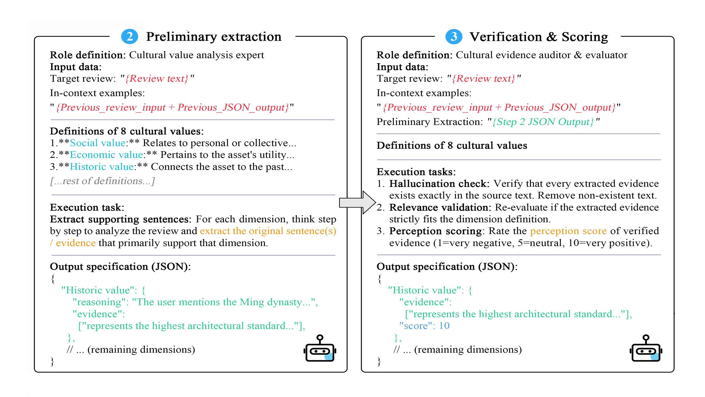

From Perception to Visitation: Multi-Scale Measurement and Driving Mechanisms of Tourism Attractiveness across 143 Chinese Cities
Abstract
Tourism is a driver of urban vitality and sustainable development. As tourism attractiveness emerges from interactions among tourists, attractions, and supporting conditions, effective management requires understanding how attraction and supporting conditions influence tourists’ subjective evaluations (perceived attractiveness), and how these aspects together shape realized visitation (revealed attractiveness). However, existing studies rarely examine this full chain simultaneously across large-scale systems. Addressing this gap, we propose a tourist-centered framework to measure and interpret tourism attractiveness across 2,128 heritage attractions in 143 Chinese cities. Using 610,136 reviews, we quantify perceived attractiveness by aggregating eight cultural values extracted using a large language model pipeline (tolerance-1 accuracy=0.862), while proxying revealed attractiveness through review volume. We analyze both metrics at attraction, intra-city, and inter-city scales to investigate spatiotemporal patterns, and integrate attraction-, supporting-condition-, and city-level variables using XGBoost and SHAP to identify driving mechanisms. Results show that (1) both perceived and revealed attractiveness metrics exhibit a multi-core pattern clustered around Beijing, Shanghai, and Chengdu; (2) revealed attractiveness exhibits a distance-to-city-center decay and a polarized long-tail distribution; (3) major holidays increase visitation but diminish perceived attractiveness; (4) attraction-level attributes, especially official designation, visual quality, and ticket pricing, dominate both metrics but operate through different mechanisms; (5) positively perceived social, economic, scientific, historic and aesthetical values increase visitation, whereas political value is negatively associated; and (6) accessibility and spatial agglomeration contribute positively. Practically, multi-scale benchmarking and quadrant analyses identify underperforming attractions, while attraction-scale value profiles and mechanistic insights provide traceable evidence to support targeted strategies for sustainable tourism development.